Liberação Miofascial
Técnica terapêutica voltada ao alívio de tensões musculares e à melhora da mobilidade. A liberação miofascial utiliza manobras manuais para trabalhar a fáscia, tecido que envolve os músculos.
Saiba mais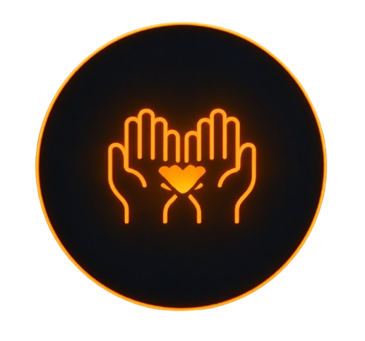
PHYSIOUP • PROCEDIMENTOS
Tratamentos que fazem a diferença
Utilizamos técnicas modernas e individualizadas para auxiliar na recuperação, na mobilidade e na qualidade de vida.
Técnica terapêutica voltada ao alívio de tensões musculares e à melhora da mobilidade. A liberação miofascial utiliza manobras manuais para trabalhar a fáscia, tecido que envolve os músculos.
Saiba mais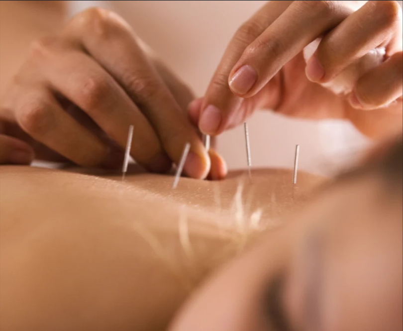
O Dry Needling é uma técnica que utiliza agulhas finas para tratar pontos de tensão muscular, ajudando a aliviar dores, reduzir contraturas e melhorar a mobilidade.
Saiba mais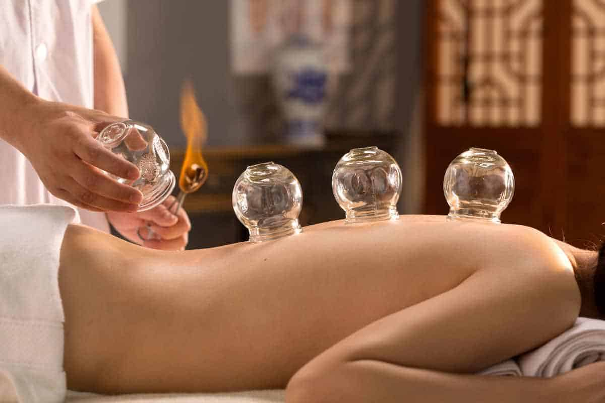
A ventosaterapia utiliza ventosas para auxiliar no alívio de tensões musculares, promover relaxamento e complementar o tratamento fisioterapêutico.
Saiba mais ›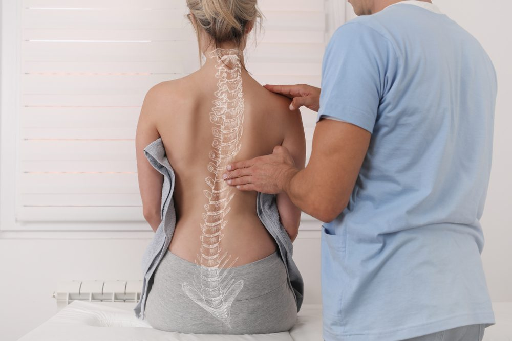
A quiropraxia utiliza técnicas manuais para melhorar a mobilidade das articulações, aliviar desconfortos musculoesqueléticos e contribuir para o bem-estar e a qualidade dos movimentos.
Saiba mais ›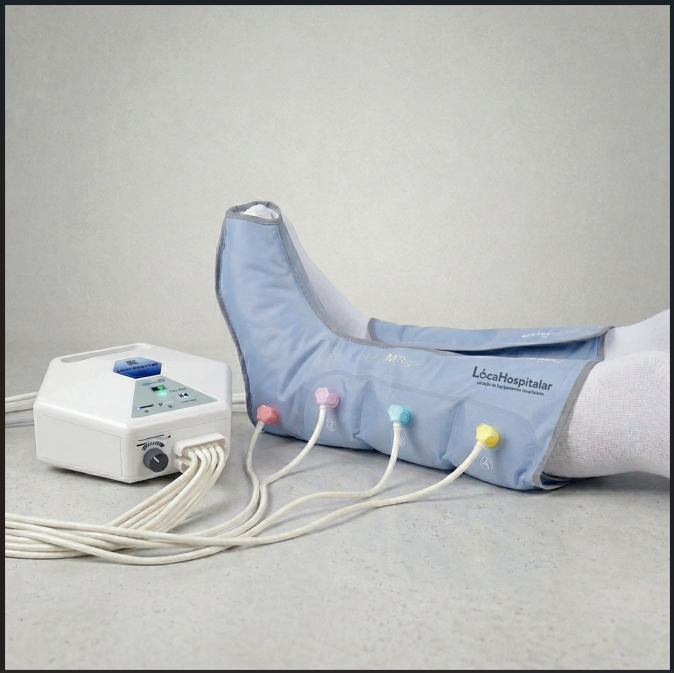
A bota pneumática utiliza compressão de ar para promover a circulação sanguínea, auxiliar na redução do inchaço e favorecer a recuperação muscular, sendo utilizada especialmente na recuperação esportiva.
Saiba mais ›
A banheira de gelo utiliza a imersão em água fria para auxiliar na recuperação após atividades físicas, aliviar temporariamente a sensação de dor muscular e contribuir para a recuperação esportiva.
Saiba mais ›
A banheira quente utiliza a imersão em água aquecida para promover relaxamento muscular, aliviar tensões e proporcionar conforto, contribuindo para o bem-estar e a recuperação física.
Saiba mais ›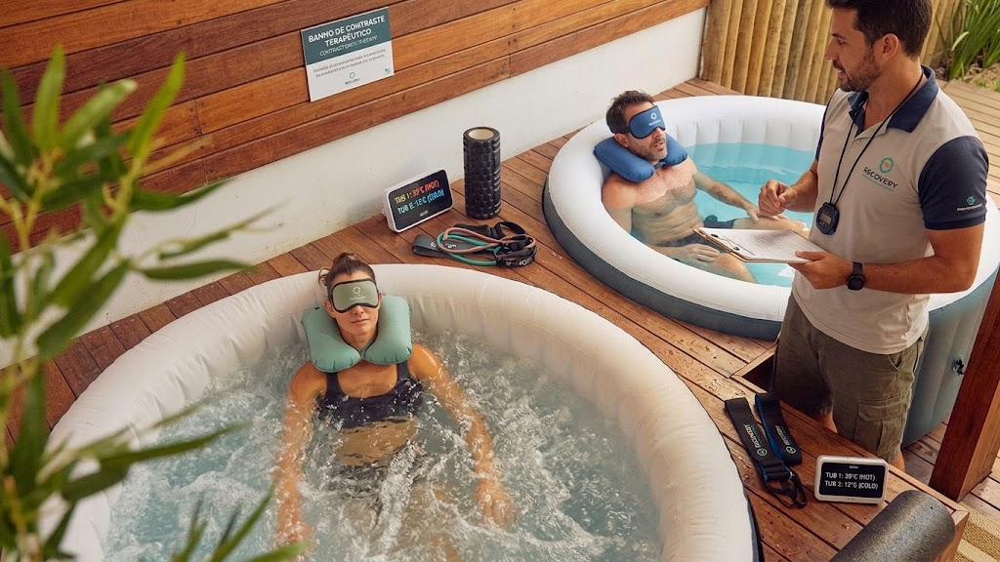
A fisioterapia de contraste alterna a aplicação de água quente e fria para auxiliar na recuperação muscular, aliviar desconfortos e favorecer a circulação, sendo utilizada como complemento à recuperação física e esportiva.
Saiba mais ›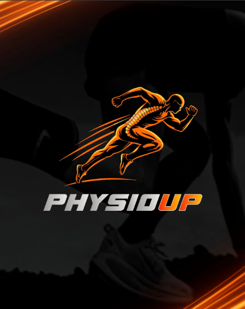
A PhysioUp nasce do compromisso profundo com o bem-estar e da paixão genuína pelo cuidado humano, transformando a fisioterapia num verdadeiro ato de dedicação à saúde e à qualidade de vida.
Mais do que tratar sintomas ou lesões pontuais, a clínica é movida pelo amor em acolher cada paciente e pela satisfação sincera de acompanhar a superação diária daqueles que buscam recuperar a sua autonomia e liberdade de movimentos.
Nela, a saúde é compreendida de forma integral, onde a reabilitação, a prevenção e o recovery caminham lado a lado para proteger e fortalecer o corpo em todas as fases da vida. Guiada pelo lema "Onde o movimento encontra a evolução", a PhysioUp une o afeto pelo ser humano à inovação e à excelência técnica, impulsionando cada pessoa a viver melhor, com mais energia, equilíbrio e plenitude.
Profissionais qualificados e apaixonados pelo movimento humano.
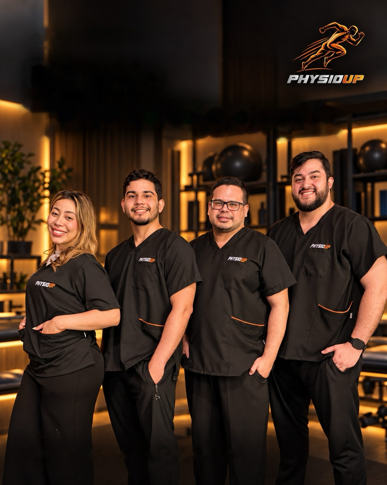
Comprometidos em impulsionar a sua melhor versão física todos os dias.
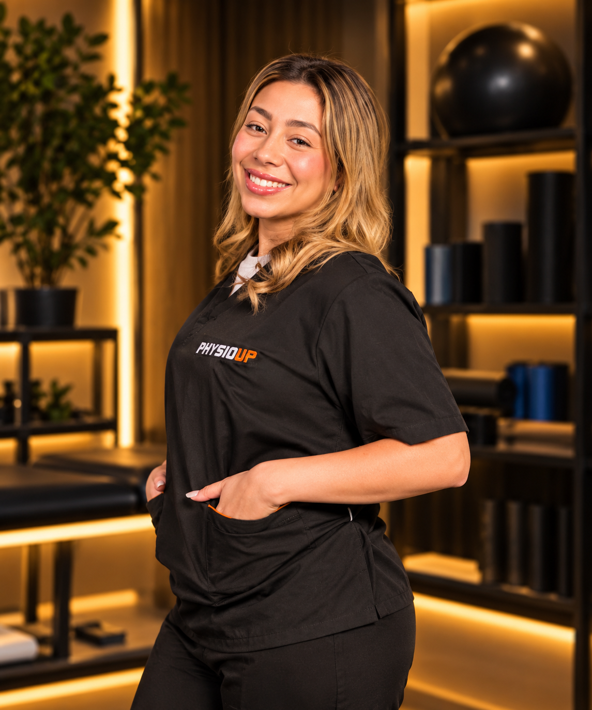
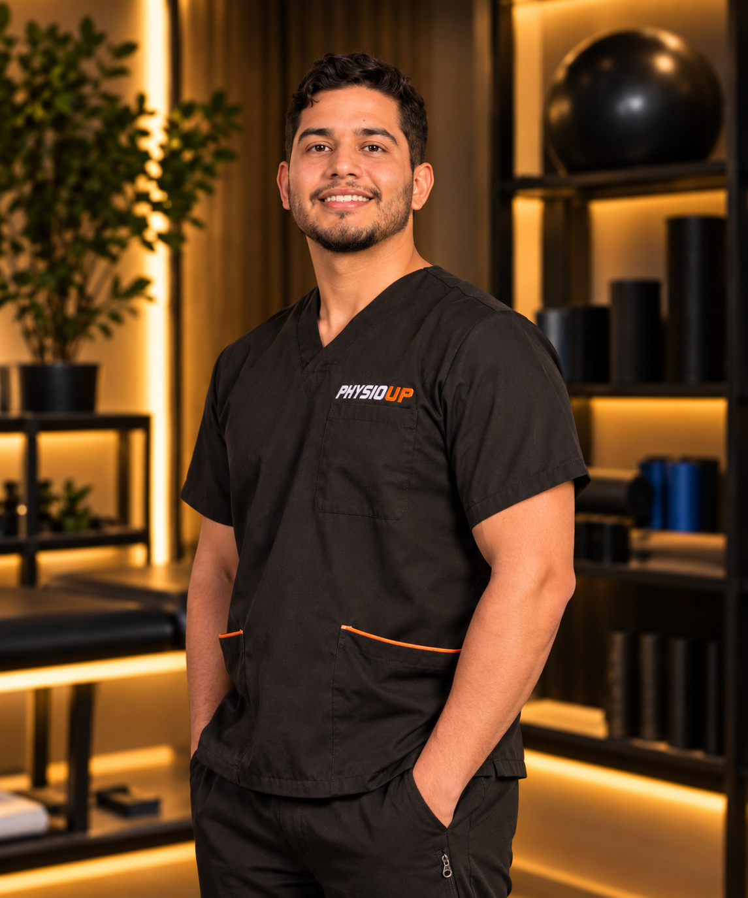
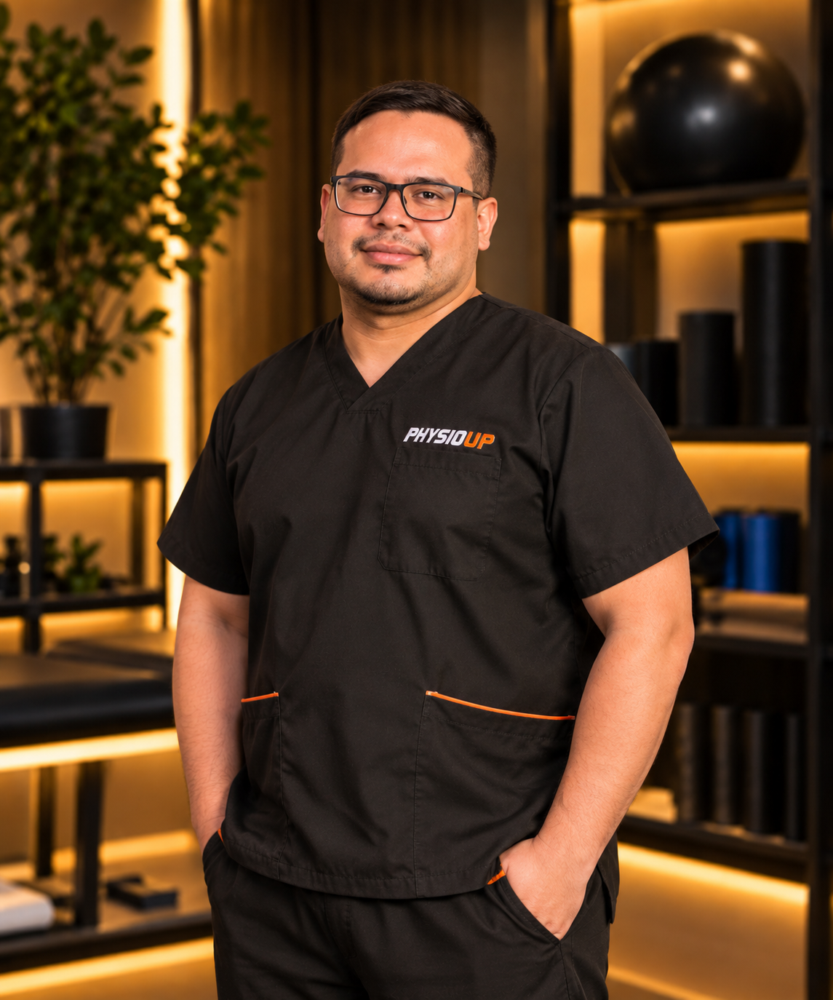
Conheça todas as nossas especialidades para a sua recuperação e alta performance.
Você sente dores musculares, tensão ou rigidez no corpo? A liberação miofascial é uma técnica que ajuda a aliviar esses desconfortos e melhorar a mobilidade.
Por meio de pressões aplicadas em regiões específicas, o tratamento auxilia no relaxamento muscular, na flexibilidade e na recuperação após atividades físicas.
Ideal para pessoas que sofrem com dores musculares causadas por estresse, rotina intensa de treinos, má postura no trabalho ou limitações de movimento no dia a dia.
De 30 a 60 minutos por atendimento, variando conforme o local e ao objetivo.

Uma abordagem voltada ao alívio da tensão muscular e à melhora da mobilidade.
Técnica utilizada para auxiliar no tratamento de pontos de tensão e dores musculares.
Você sente dores musculares persistentes ou pontos de tensão que dificultam seus movimentos? O Dry Needling, também conhecido como agulhamento a seco, é uma técnica que pode ajudar a aliviar esses desconfortos.
O procedimento utiliza agulhas finas aplicadas em pontos específicos dos músculos, com o objetivo de reduzir a dor e melhorar a função muscular.
Pontos de tensão, dores musculares e desconfortos que limitam os movimentos.
30 a 45 minutos, podendo variar conforme a quantidade de pontos tratados e a necessidade de cada paciente.
Você sente tensão muscular ou desconforto após uma rotina intensa? A ventosaterapia utiliza ventosas aplicadas sobre a pele para criar uma sucção controlada, podendo ajudar no alívio temporário de dores e na sensação de relaxamento.
A aplicação é adaptada à região tratada e às necessidades de cada paciente, sempre respeitando os cuidados necessários com a pele.
Tensão muscular, desconfortos físicos e dores que precisam de avaliação.
20 a 40 minutos, podendo variar conforme a região tratada e a necessidade de cada paciente.
A aplicação é ajustada às necessidades de cada paciente. Podem surgir marcas temporárias na pele, por isso a técnica exige avaliação e cuidados específicos.
Uma técnica complementar que pode auxiliar no alívio de desconfortos musculares.
Você sente dores na coluna, rigidez ou dificuldade para realizar determinados movimentos? A quiropraxia utiliza técnicas manuais direcionadas ao sistema musculoesquelético, especialmente à coluna vertebral e às articulações, podendo auxiliar no alívio de alguns desconfortos e na melhora da mobilidade.
As técnicas são selecionadas conforme as necessidades de cada paciente, após avaliação individualizada e identificação de possíveis contraindicações.
Alguns casos de dor na coluna ou no pescoço, rigidez e redução da mobilidade, conforme avaliação profissional.
30 a 60 minutos, podendo variar conforme a avaliação, as técnicas utilizadas e a necessidade de cada paciente.
O atendimento considera o histórico, as condições físicas e as necessidades de cada paciente. As técnicas devem ser aplicadas por profissional qualificado, com atenção especial às contraindicações e à segurança do procedimento.
Técnicas manuais individualizadas, com foco na mobilidade e no cuidado musculoesquelético.
Você sente as pernas cansadas após uma rotina intensa ou atividades físicas? A bota pneumática utiliza câmaras de ar que inflam e desinflam de forma sequencial, aplicando pressão controlada nas pernas para auxiliar a movimentação dos fluidos nos membros inferiores.
A intensidade e o tempo de aplicação são ajustados conforme os objetivos do atendimento, as necessidades de cada paciente e a orientação profissional.
Sensação de pernas cansadas e recuperação após exercícios, conforme avaliação profissional.
20 a 30 minutos, podendo variar conforme o protocolo utilizado e a necessidade de cada paciente.
A pressão e a duração são definidas individualmente. A técnica exige avaliação prévia, pois pode ser contraindicada em algumas condições, como determinados problemas vasculares ou suspeita de trombose.
Compressão pneumática que pode complementar cuidados de recuperação física.
Busca uma forma de complementar sua recuperação após atividades físicas intensas? A banheira de gelo consiste na imersão parcial ou corporal em água fria por um período controlado. Essa prática é utilizada principalmente no contexto esportivo e pode ajudar a reduzir temporariamente a percepção de dores e desconfortos musculares.
A temperatura da água e o tempo de exposição devem ser controlados e adaptados às condições de cada pessoa, respeitando os cuidados necessários para uma prática segura.
Recuperação percebida após exercícios intensos, conforme avaliação e orientação profissional.
5 a 15 minutos, podendo variar conforme a temperatura da água, a tolerância e a necessidade de cada paciente.
A temperatura e o tempo de exposição precisam ser controlados. A imersão em água muito fria pode apresentar riscos, especialmente para pessoas com problemas cardiovasculares, alterações de sensibilidade ou outras condições específicas. A avaliação profissional ajuda a verificar se a prática é adequada para cada paciente.
A imersão em água fria pode complementar a recuperação após atividades físicas.
Precisa relaxar após uma rotina cansativa ou atividades físicas? A banheira quente utiliza água aquecida para proporcionar conforto corporal. O calor pode ajudar a relaxar a musculatura e aliviar temporariamente a sensação de rigidez, favorecendo uma experiência de relaxamento e bem-estar.
A temperatura da água e o tempo de exposição devem ser ajustados para cada pessoa, evitando o calor excessivo e respeitando as orientações de segurança.
Relaxamento, desconforto muscular leve e sensação de rigidez, conforme avaliação profissional.
15 a 30 minutos, podendo variar conforme a temperatura da água e a necessidade de cada paciente.
A temperatura e o tempo de exposição devem respeitar os limites de segurança. O calor pode não ser adequado para pessoas com determinadas condições cardiovasculares, alterações de sensibilidade ou outros problemas de saúde. A avaliação profissional ajuda a verificar os cuidados necessários para cada paciente.
A água aquecida pode proporcionar conforto e auxiliar no relaxamento muscular.
Busca melhorar a recuperação muscular após atividades físicas ou aliviar a sensação de cansaço? A terapia de contraste funciona por meio da alternância entre água quente e fria, expondo o corpo a diferentes temperaturas de forma controlada. O calor ajuda a relaxar a musculatura, enquanto o frio proporciona uma sensação refrescante.
É utilizada em determinados protocolos de recuperação e bem-estar. A aplicação, as temperaturas e o tempo de exposição devem ser definidos conforme as necessidades e condições de cada pessoa, com orientação profissional.
Pode ser considerada para recuperação muscular, sensação de cansaço e determinados cuidados circulatórios, após avaliação profissional.
15 a 30 minutos, podendo variar conforme o protocolo utilizado e a necessidade de cada paciente.
Pode auxiliar na recuperação muscular.
Pode ajudar a aliviar a sensação de cansaço.
Promove estímulos térmicos alternados.
Pode contribuir para a sensação de relaxamento.
Pode auxiliar no controle da sensação de inchaço em situações específicas.
Pode complementar um plano individualizado de recuperação.
A terapia de contraste não é indicada para todas as pessoas. A avaliação profissional é importante para identificar contraindicações e determinar se a alternância térmica é adequada, considerando condições circulatórias, sensibilidade térmica e histórico de saúde.
A alternância entre água quente e fria proporciona uma experiência terapêutica que auxilia no relaxamento muscular, estimula a circulação sanguínea e contribui para a recuperação física, promovendo conforto e bem-estar.
Nossa estrutura foi minuciosamente projetada para oferecer conforto, privacidade e equipamentos de alta tecnologia para o seu atendimento.
Instagram Oficial
Acompanhe diariamente nossos casos de sucesso, dicas de prevenção, exercícios de fortalecimento e bastidores da nossa estrutura.
Avenida Mário Ypiranga, 1550 - Parque 10 de Novembro, Manaus - AM
Agendamentos rápidos via WhatsApp